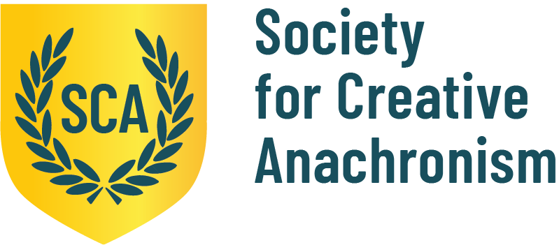

A Fascination with the Past


History has always captivated Sophia. She enjoys the wealth of information there is to learn and how much there is left to discover. Her love for history only grew when she found the Society for Creative Anachronism (SCA); a group of fellow history enthusiasts who explore every part of history and bring it to life.